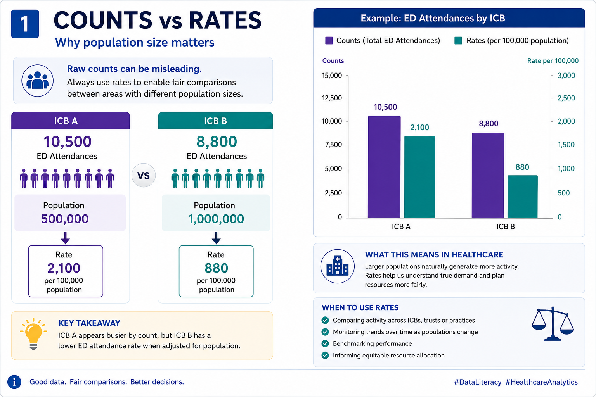
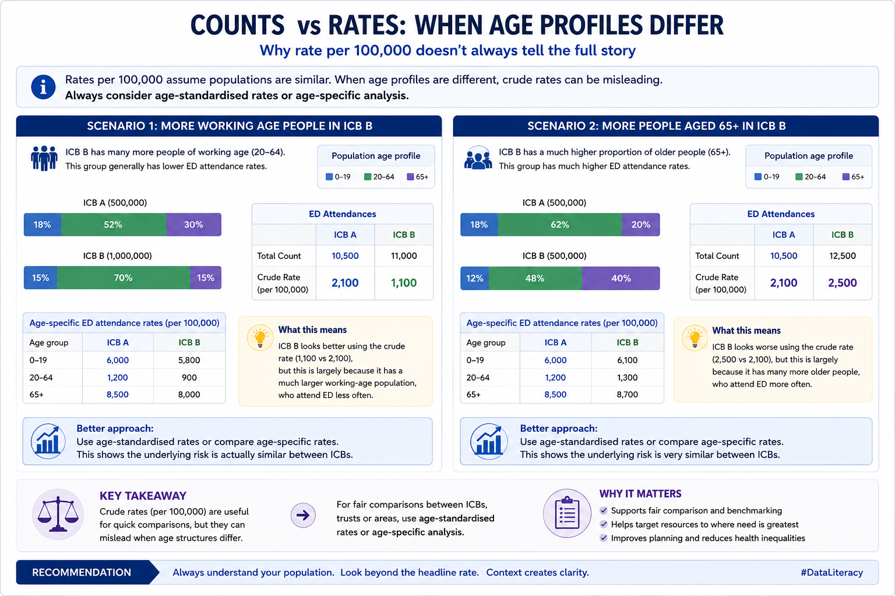
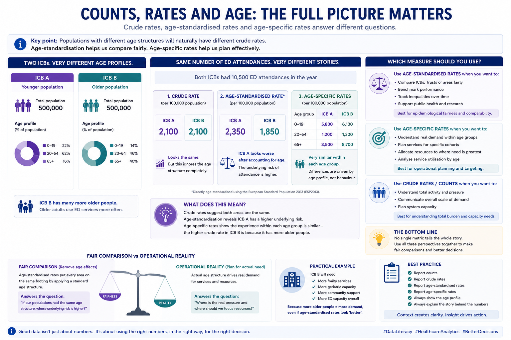
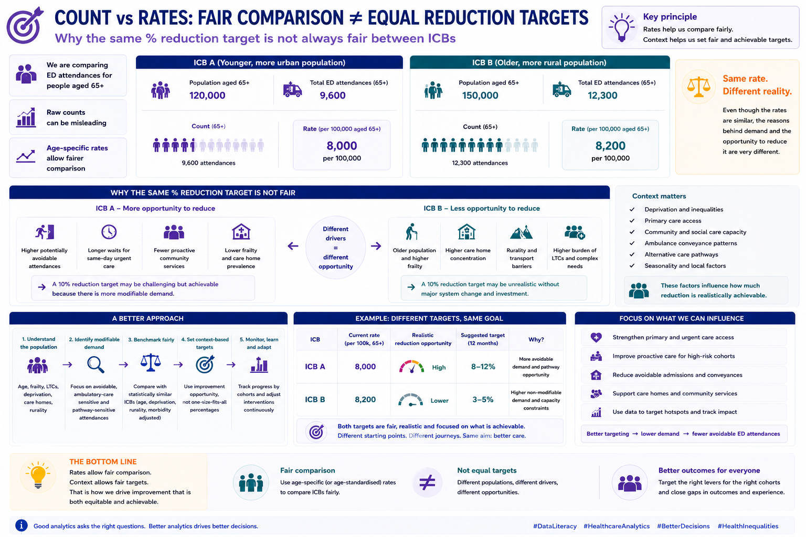

Counts vs Rates
Counts are an important metric to gain a feel for volumes of activity or patients. However they are not useful when comparing with other geographical areas.
Rates (often per 10,000 or 100,000) are often referred to as “Crude Rates” and offer a fairer way for comparison.

# Consideration 1
What about the scenario when age profiles are different amongst geographical areas?
For example there is proportionally more working age people in ICB B compared to ICB A or when more people aged 65 and over in ICB B compared to ICB A.

# When it is important to consider switching to Age Standardised Rates
Whether to switch or not depends on the purpose of the comparison and what question you are trying to answer.
For healthcare analytics, the distinction is important because age-standardisation is fundamentally about removing differences in population structure so comparisons are fair.
Use national standard populations (e.g.European Standard Population/ESP2013 or directly standardised national populations)
when:
comparing areas fairly
benchmarking organisations
tracking inequalities
publishing comparable rates
supporting epidemiological/public health interpretation
Use actual local population cohorts or age-specific rates when:
operational planning matters more than comparability
you want to understand real demand
analysing service utilisation by age
working with specific cohorts (e.g. frailty, paediatrics, working-age adults)For many NHS operational use cases, age-specific rates are often more interpretable than a single age-standardised figure.
Crude rates are useful for operational decision making 
Example 1:
Imagine:
ICB A - younger urban population
ICB B - older rural/coastal populationED attendance crude rates may naturally be higher in ICB B because:
older adults attend ED more often
more frailty
more multimorbidityAge-standardisation removes this structural difference.
That’s useful if asking:
“Is the underlying utilisation risk genuinely higher?”But less useful if asking:
“Which system actually needs more ED capacity?”Because the actual older population still exists operationally.
For Specific Age Cohorts
If you are already analysing:
- 65+
- 0–19
- working-age adults
- frailty cohorts…then applying age-standardisation again can become less meaningful.
Why?
Because you’ve already partially controlled for age through cohort restriction.
In these cases, it’s often better to use:
Age-specific rates
Example 2:
| Cohort | ED Attendances per 100k |
|---|---|
| 0–19 | 5,800 |
| 20–64 | 1,200 |
| 65+ | 8,700 |
This is usually: easier to interpret operationally meaningful clinically intuitive Practical NHS Guidance
Use ESP / standard populations when:
Public health style comparison: mortality prevalence admissions inequalities
Benchmarking: comparing ICBs comparing local authorities comparing Trust populations
Research / publication reproducibility comparability
Use Actual Population Cohorts When:
Operational analytics: capacity planning demand modelling workforce planning frailty services community services
Population health management: identifying actual burden targeting interventions
Service utilisation analysis: who is using services where pressure originates
Very Important Caveat
Age-standardised rates can sometimes obscure true operational burden.
An area with:
genuinely older populations higher frailty more multimorbidity
…may appear “average” after standardisation despite facing substantially greater service pressure.
That’s why executives should usually see BOTH:
crude rates
age-standardised rates
actual counts
age-specific breakdownsTogether
A Strong Rule of Thumb
For fair comparison:
Use age-standardised rates.
For operational decision-making:
Use actual age-specific demand profiles.
Consideration 2
When setting reduction targets e.g. ED Attendances is it fair to apply the same % reduction to both ICBs even if split into Age specific cohorts
No — applying the same percentage reduction target across two ICBs is often not fair or operationally realistic, even if both are measured using rates.
This is exactly where people move from:
- simple benchmarking to
- meaningful population-adjusted operational planning.
The key issue is:
identical percentage reductions assume the same underlying opportunity, risk profile, and pathway flexibility.
That is rarely true.
Why This Matters
Imagine:
| ICB | Population Profile |
|---|---|
| ICB A | Younger, urban, lower frailty |
| ICB B | Older, rural, higher frailty |
Even after using age-specific ED attendance rates, the systems may still differ because of:
- deprivation
- multimorbidity
- access to primary care
- transport
- care home prevalence
- community service availability
- rurality
- ambulance conveyance patterns
- social care capacity
So:
a 10% reduction target may be much more achievable in one system than another.
Important Nuance
Rates improve fairness
…but they do not eliminate structural differences.
That’s a crucial distinction.
Age-specific rates answer:
“Are we comparing similar age groups?”
But not:
“Do these systems have the same modifiable demand?”
Example 3
ICB A
65+ ED attendance rate:
- 8,000 per 100k
Drivers:
- potentially avoidable attendances
- weak same-day urgent care
- poor community frailty support
ICB B
65+ ED attendance rate:
- 8,200 per 100k
Drivers:
- very elderly population
- care home concentration
- rural transport delays
- higher stroke/frailty burden
Same rate. Very different operational reality.
A blanket:
“reduce by 10%”
implicitly assumes equal reducibility.
That’s often false.
What Works Better Operationally
- Understand Reducible vs Non-Reducible Demand
Some ED activity is:
- clinically appropriate
- structurally unavoidable
- demographically driven
Some is potentially avoidable.
Operationally, the focus should be:
- avoidable admissions
- ambulatory-sensitive conditions
- pathway gaps
- delayed community response
- repeat attendance cohorts
rather than crude overall reductions alone.
- Segment by Cohort
Better targets are often cohort-specific:
| Cohort | Better Target |
|---|---|
| Frailty | reduce avoidable conveyances |
| LTCs | improve proactive management |
| Frequent attenders | reduce repeat attendances |
| Care homes | improve in-place care |
| Children | improve same-day access |
- Use Improvement Opportunity, Not Just Current Rate
Two ICBs may have:
- similar rates
- different pathway maturity
Example 5:
| System | Community Frailty Service |
|---|---|
| ICB A | immature |
| ICB B | already optimised |
ICB A may have more achievable reduction opportunity.
- Consider Capacity Constraints
Reduction targets often assume systems can absorb demand elsewhere.
But if:
- community rehab
- urgent community response
- primary care
- virtual wards
- social care
are weak, ED reduction becomes harder.
- Use Relative + Contextual Targets
Better approaches often combine:
Relative improvement
e.g.
- improve against own baseline
PLUS
Peer benchmarking
e.g.
- compare against statistically similar systems
This is more sophisticated than:
“everyone reduce by X%.”
Better Questions Than:
“Can both reduce by 10%?”
Ask:
- What proportion is avoidable?
- Which cohorts drive growth?
- Which attendances are pathway-sensitive?
- What operational levers exist?
- What capacity exists outside ED?
- What does good look like for similar systems?
- What inequities are driving demand?
In Practice
The most analytically mature systems usually:
- benchmark fairly
- stratify cohorts
- identify modifiable demand
- model realistic improvement opportunity
- set pathway-specific targets
rather than blanket percentage reductions.
Analytically
This is where:
- age-standardisation
- cohort segmentation
- risk adjustment
- cluster benchmarking
- deprivation adjustment
- pathway analytics
become essential.
A Strong Principle - Fair comparison ≠ fair target
“Fair comparison ≠ fair target”
That’s an important healthcare analytics lesson.
Two systems can be fairly compared statistically, while still requiring very different operational expectations.
“Fair Comparison Does Not Mean Equal Reduction Targets”
Showing:
Rates
↓
Fair comparison
≠
Equal operational opportunitywith:
- age profile
- frailty
- deprivation
- pathway maturity
- community capacity
all influencing achievable reduction.
